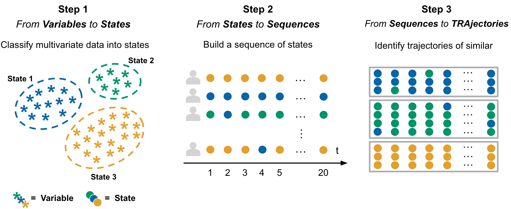
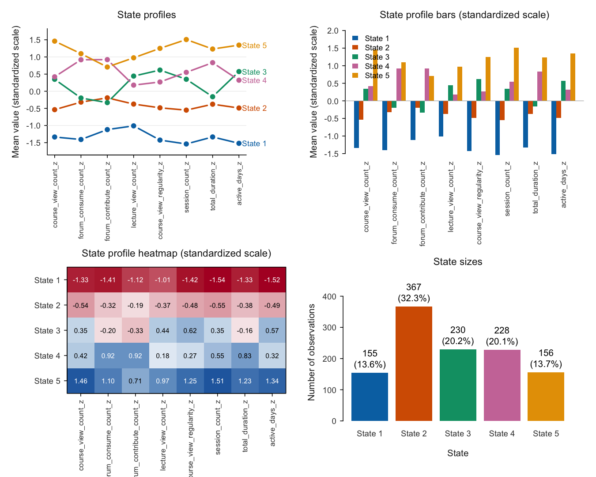
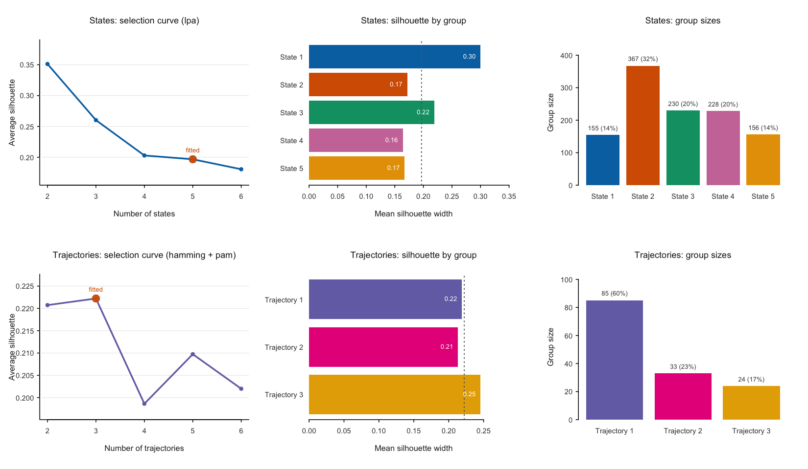
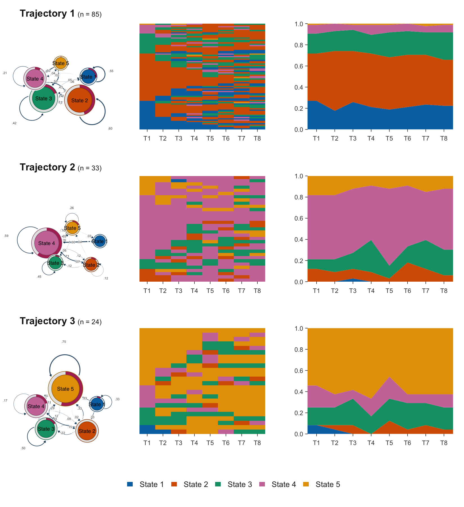
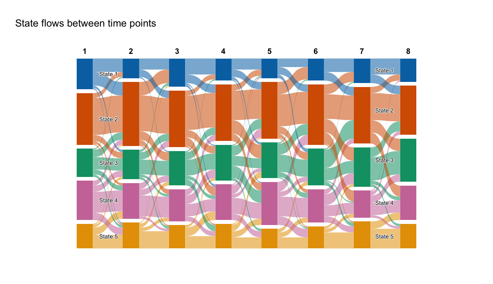
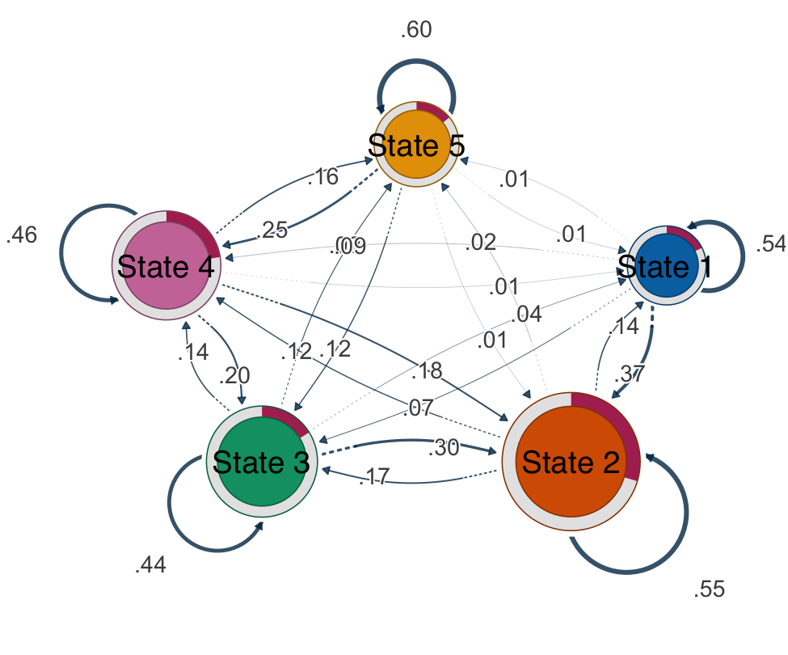

VaSSTra turns longitudinal multivariate data into interpretable states, sequences, and trajectory groups. The whole analysis is one call, every part of it is also a simple explicit step, and every automated decision is reported and recorded.
The method
The name is the workflow: Variables become States, states become Sequences, and sequences become Trajectories. Each step compresses the data while keeping what matters for how people change — multivariate observations collapse into a few interpretable states, each subject’s states ordered in time form a sequence, and subjects with similar sequences group into trajectories.

Installation
# install.packages("pak")
pak::pak("sonsoleslp/vasstra")One call
States are estimated by latent profile analysis (mclust "EEI", tidyLPA model 1) by default; state_method switches to k-means, PAM, or hierarchical clustering. Automatic selection compares 2 through 6 candidates and never picks a solution whose smallest group holds under 5 percent of the observations.
vasstra() finds the subject, time, and indicator roles from attached role metadata or common column names, compares two through six states and trajectories, and fits the recommended counts. Three natural shortcuts cover most analyses:
vasstra(engagement, state_labels = c("Disengaged", "Average", "Active"))
#> three labels, so three states — no n_states needed
vasstra(engagement, n_states = 2:4)
#> compares exactly these candidates and fits the recommended one
vasstra(engagement, n_states = 3)
#> fits exactly three statesName any decision to take it over; automation only fills what you omit:
fit <- vasstra(
engagement,
state_labels = c("Disengaged", "Average", "Active"),
dissimilarity = "lcs",
cluster_method = "ward.D2",
positive_states = "Active",
negative_states = "Disengaged"
)
#> the chapter analysis: three labels imply three LPA profilesTidy tables are returned directly at the requested analysis unit:
as.data.frame(fit) # one row per student
as.data.frame(fit, unit = "observation") # one row per student-time
as.data.frame(fit, unit = "state_profile") # one row per state-indicator
as.data.frame(fit, unit = "trajectory") # one row per trajectoryUnderstand the states
State results support profile, bar, heatmap, and size plots plus a combined overview, all without adding a plotting dependency:
plot(fit, which = "states", type = "all") # profile + bars + heatmap + sizes
plot(fit, which = "states", type = "profile")
plot(fit, which = "states", type = "profile", scale = "original")
Evaluate the clustering
evaluate() compares the fitted counts against the neighboring candidates and reports per-cluster quality. Plotting draws the selection curve, per-cluster silhouette widths, and group sizes; the state and trajectory rows use distinct palettes so they are not read as corresponding groupings.
evaluation <- evaluate(fit)
evaluation # candidate and per-cluster tables
as.data.frame(evaluation) # one tidy row per compared count
plot(evaluation) # selection curve + silhouette + sizes
The same verb evaluates a single step, with any candidate range:
Tidy fit indices
fit_indices() returns the fit statistics of the selected clustering as one tidy row — for LPA the complete information-criterion family (log-likelihood, AIC, BIC, SABIC, CAIC, AWE, CLC, KIC, ICL), normalized entropy, and the minimum and maximum average posterior class probabilities, plus silhouette and group sizes. compare = TRUE gives one row per candidate with best and fitted markers. Columns that do not apply to the fitted method are dropped, so k-means reports its within-cluster sum of squares instead of likelihood criteria.
fit_indices(fit) # the fitted state model
fit_indices(fit, compare = TRUE) # against all candidate counts
fit_indices(fit, step = "trajectories") # the trajectory clusteringRelabel anything, tidily
set_labels() renames fitted groups after inspection — no refitting, no touched numbers — and propagates the names through every table, sequence, and plot, including recorded positive and negative states and any stored state_colors. Use a full vector or rename only some groups by name:
fit <- set_labels(fit, states = c("State 1" = "Disengaged",
"State 2" = "Average",
"State 3" = "Active"))
fit <- set_labels(fit, trajectories = c("Mostly active",
"Mostly average",
"Mostly disengaged"))
states <- set_labels(states, c("Low", "Average", "High"))Four explicit steps
Each step runs alone with the same automated defaults, and each accepts the result of the previous step:
states <- step1_states(data) # roles and count automated
states <- step1_states(data, n_states = 3, # or fully explicit
labels = c("Low", "Average", "High"))
sequences <- step2_sequences(states)
trajectories <- step3_trajectories(sequences)
description <- step4_describe(
trajectories,
positive_states = "High",
negative_states = "Low"
)Existing states from LPA, LCA, or another method enter directly at step 2; the state column of a plain data frame is detected or named:
sequences <- step2_sequences(data_with_states, state = "engagement_state")Compare candidates in full detail
When automation should be replaced by an explicit comparison, state_choices() and trajectory_choices() fit a tidy grid across methods and counts. Nothing is selected silently; fit the inspected candidate by its id.
state_options <- state_choices(data, n_states = 2:4,
method = c("kmeans", "pam", "ward.D2"))
state_options
plot(state_options, metric = "silhouette")
states <- fit_state_choice(state_options) # the recommendation
states <- fit_state_choice(state_options, # or say what you want
n_states = 3, method = "pam",
labels = c("Low", "Average", "High"))
trajectory_options <- trajectory_choices(sequences, n_trajectories = 2:4,
dissimilarity = c("hamming", "lcs"),
method = c("pam", "ward.D2"))
trajectory_options
plot(trajectory_options, metric = "silhouette")
trajectories <- fit_trajectory_choice(trajectory_options,
n_trajectories = 3,
dissimilarity = "lcs",
method = "ward.D2")Average silhouette is the common diagnostic; recommendations maximize it within each method (LPA candidates use conventional BIC by default via lpa_criterion), subject to the requested group-size constraints.
Sequence views
Every plot containing state sequences is rendered by Nestimate:
plot(fit, which = "sequences") # heatmap of every aligned sequence
plot(fit, which = "sequences", type = "distribution")
plot(fit, type = "index") # one panel per trajectory
plot(fit, type = "distribution")You can also describe each trajectory three ways at once: the transition network it follows, the individual sequences it groups, and how its state composition unfolds over time — all on a shared palette and state order.

Flow plots
Sequence plots are organised by subject similarity, so they show who resembles whom but not where movement goes — and a flat state distribution cannot distinguish a cohort where nobody moves from one where everybody swaps. flow_plot() draws the movement itself, rendered by cograph (a suggested package), on the same palette and state order as every other VaSSTra plot:
flow_plot(fit) # aggregated alluvial bands
flow_plot(fit, type = "individual") # one line per subject
flow_plot(fit, color_by = "destination") # colour bands by where they arrive
flow_plot(fit, group = "Mostly average") # one trajectory's flows
Individual flows are bundled automatically so large cohorts stay legible (bundle = FALSE draws every subject). Unlike the base-graphics plot() methods, flow_plot() returns a ggplot object.
Transition networks
transition_plot() collapses every time step into one network: states are nodes, transitions are directed edges, and node size is a centrality of the transition network. Nestimate builds the network and the centralities (build_tna(), net_centrality()), and cograph::splot() draws it — recognising the network object and supplying TNA styling, labels, and initial-probability rings on its own. The default node size is in-strength, so the largest node is the state the cohort most often moves into.
transition_plot(fit) # size = in-strength
transition_plot(fit, weights = "count") # raw counts
transition_plot(fit, size = "OutStrength") # any Nestimate measure
transition_plot(fit, loops = TRUE) # count self-transitions
transition_plot(fit, group = "Mostly disengaged") # one trajectory
transition_plot(fit, sequences = TRUE) # sequences + network
sequences = TRUE draws the state sequences beside the network — the conventional pairing, where the left panel shows the raw data and the right summarises its movement. Both panels share one palette, so a state has the same colour in each; "heatmap" and "distribution" select the left view.
The same centralities come as a tidy table, without drawing anything:
transition_centrality(fit) # in- and out-strength
transition_centrality(fit, measures = "all") # every Nestimate measure
transition_centrality(fit, weights = "count")Self-transitions are excluded from the centrality by default, matching Nestimate::net_centrality() and tna::centralities() — otherwise a persistent state looks large merely because its members stay put, which is a different claim from attracting movement. See vignette("flow-plots").
Interactive app
launch_app() opens a Shiny application (requires the suggested shiny and DT packages) that runs the whole workflow interactively: load a CSV or the built-in engagement data, map roles, fit with automated or explicit counts, read the decisions log, walk the state / sequence / trajectory / evaluation / fit-index tabs, rename groups after inspecting them, and export every tidy table.
VaSSTra::launch_app()Dependencies
mclust powers the default LPA state estimation, base R provides k-means and hierarchical clustering, cluster provides PAM, and Nestimate provides sequence distances, trajectory clustering, and all sequence plots. cograph is suggested, not required, and renders the flow plots. There is no TraMineR plotting path or dependency.
Method overview: VaSSTra chapter.